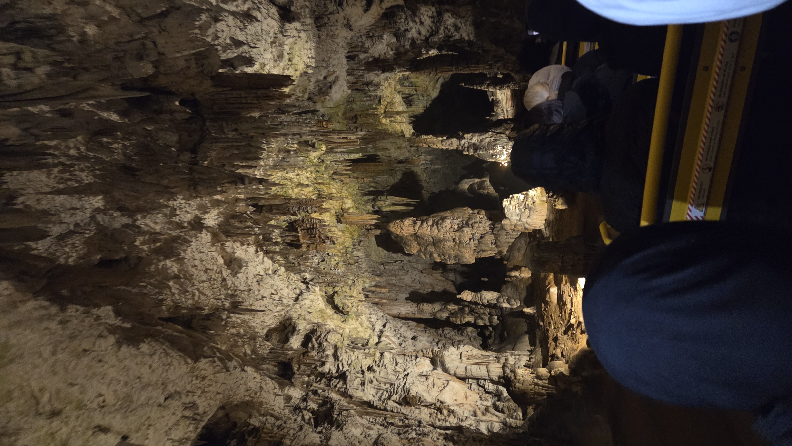

Galleria: Il Mondo Sotterraneo



Il mondo sotterraneo
L'ultimo giorno del nostro viaggio è iniziato con i bagagli sul pullman, in direzione del confine sloveno per la via del ritorno. La nostra ultima, grande tappa sono state le Grotte di Postumia (Postojnska jama). Si tratta del complesso carsico più grande della Slovenia, creato in oltre 1 milione di anni e uno dei più visitati in Europa.
Il trenino e il Proteo
L'esplorazione della grotta è iniziata in modo molto particolare: siamo saliti a bordo di un piccolo trenino sotterraneo a due binari che ci ha condotti per circa due chilometri nelle profondità della terra. Scesi dal treno, abbiamo iniziato un percorso a piedi attraverso enormi "sale" sotterranee illuminate, circondati da stalattiti e stalagmiti secolari dalle forme più strane, alcune bianchissime, altre rosate a causa dei minerali.
Verso la fine del percorso abbiamo potuto osservare un acquario sotterraneo che ospita il Proteo, un anfibio cieco endemico di queste grotte, un tempo creduto dai locali il cucciolo dei draghi. Usciti dalle grotte, abbiamo ripreso il pullman per il viaggio di ritorno verso l'Italia, stanchi ma arricchiti da questa esperienza formativa.